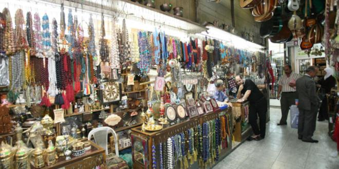
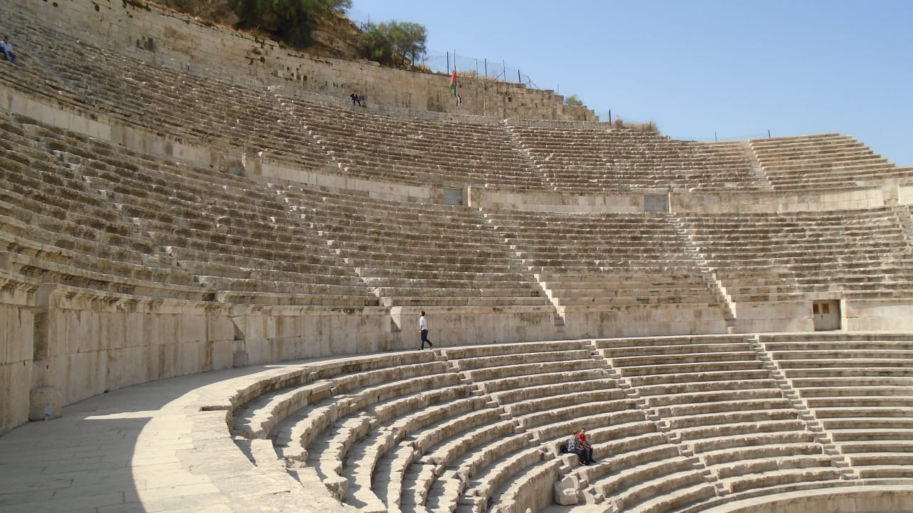
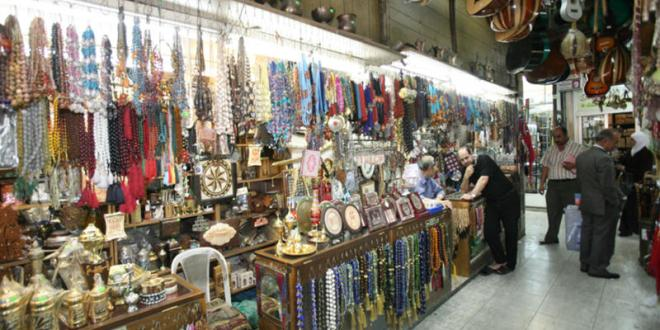
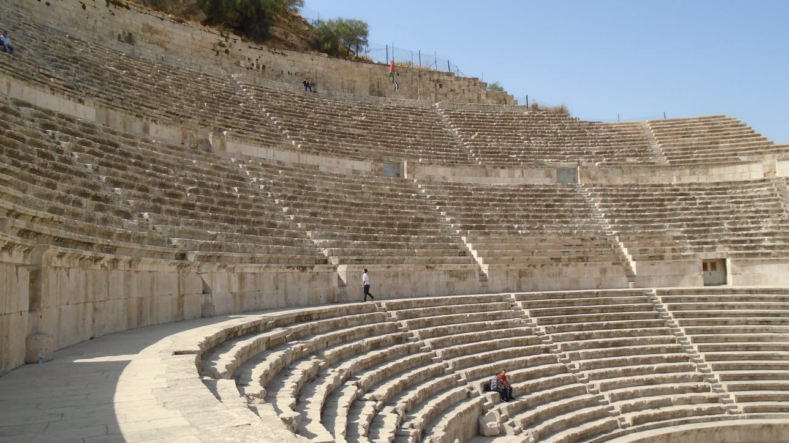

مدينتي عمان
عمان هي عاصمة المملكة الأردنية الهاشمية وأكبر مدنها. تقع في الجزء الشمالي الأوسط من الأردن وتعتبر المركز السياسي والاقتصادي والثقافي للبلاد. يعود تاريخ المدينة إلى العصور القديمة حيث كانت مأهولة منذ العصر الحجري الحديث.
تتميز عمان بتنوعها المعماري الذي يجمع بين القديم والحديث، وتشتهر بتلالها المتعددة التي تمنحها طابعاً مميزاً. المدينة هي موطن لمزيج رائع من الثقافات والتقاليد العربية الأصيلة مع لمسات عصرية.
معرض صور عمان
 


